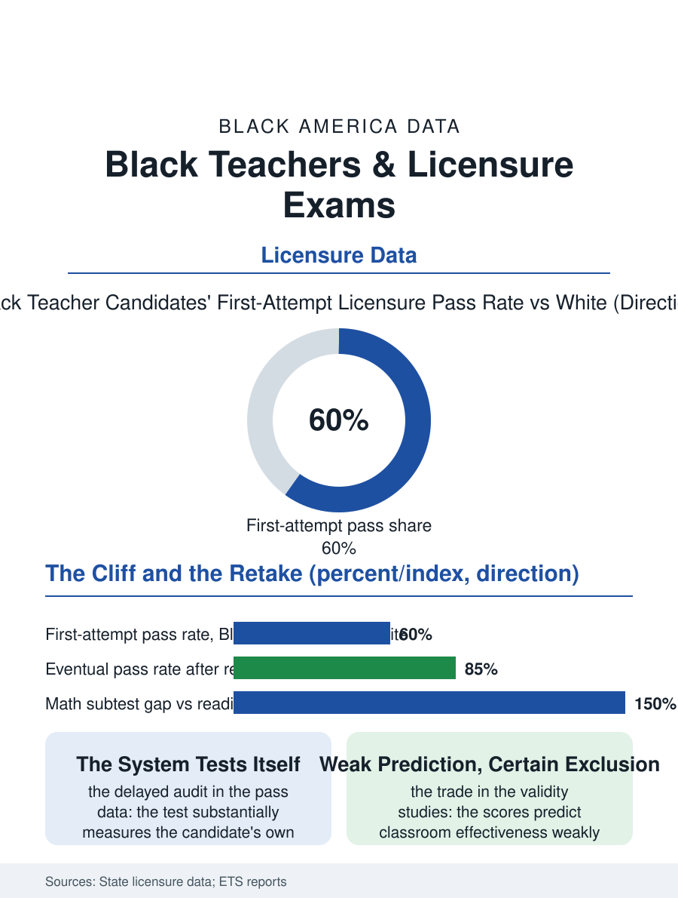

Black Education
The Lock on the Classroom Door: Black Teachers and Licensure Exams
First-attempt pass rates at sixty percent of the white rate, a weak prediction of classroom quality, and a retake tax on the poorest candidates. The licensure file.

The teacher licensure examination is the classroom door's lock, and its pass rates by race are among the education file's most consequential and least discussed numbers: Black candidates pass the standard elementary licensure tests on the first attempt at rates far below the white candidates', in some states' data by thirty points or more, in a gap that decides who teaches before any classroom judges them. This article reads the licensure exam file.
The First-Attempt Cliff
The testing companies' and states' published pass rate data draw the cliff with unusual clarity: the elementary content examinations that gate the license in most states show first-attempt pass rates for Black candidates running in the vicinity of half to two thirds the white rate, varying by state and subject in a pattern that tracks the teacher preparation file's inputs, the candidates' own K-12 and college preparation in the tested subjects, so that the examination functions substantially as a delayed audit of the very school system the candidate hopes to teach in, its failures assigned to the system's own graduates. The retake file softens and sharpens the point in turn: the eventual pass rates after retakes narrow the gap substantially, the persistent candidate with the fees and the time arriving at the license a semester or a year late, so that the exam's racial incidence is partly a delay tax priced in retake fees and forgone salary, falling on the candidates least able to carry either, in the credential files' standard pattern. The subject examinations stratify the cliff: the mathematics subtests post the widest gaps in the state data, the reading and writing subtests narrower ones, a distribution that maps the pipeline's own subject preparation and steers the surviving candidates toward the elementary and early childhood licenses and away from the secondary mathematics classrooms where the shortage file's need is greatest.
What the Test Predicts
The examination's defense rests on its validity, and the research file is the honest contested ground the principals file would recognize: the licensure test scores predict the teacher's measured classroom effectiveness weakly in the studies that link them, the relationship present but modest, while the test's exclusion effect is large and certain, so that the policy question is the trade the gate makes between the marginal effectiveness it screens for and the workforce composition it screens out, a trade the states strike differently, the cut scores varying across the state lines by margins that move thousands of candidates across the pass line without any change in the candidates. The alternatives file is the current era's: the portfolio and performance assessments, the edTPA and its kin, whose own demographic gaps the early data examine with the same lens, the residency and apprenticeship routes that substitute the supervised year's evidence for the examination's morning, and the emergency and provisional licenses of the shortage era, whose expansion during the staffing crisis admitted the untested candidate to the classroom the gate was built for, an experiment whose classroom results the states are now, belatedly, positioned to compare against the gate's predictions.
The Door's Lock, Reconsidered
The licensure exam file closes on the gate's redesign, because the teacher shortage and the diversity data have made the current settlement untenable in the states' own terms: the basic skills screens abolished or folded into the preparation programs in a growing list of states, the cut scores revisited under the validity evidence, the retake fees subsidized, the preparation support formalized in the programs whose candidates pass at the rates the support predicts, each reform an admission that the gate's dimensions were a policy choice all along, measurable in the workforce the classrooms received. The file's discipline is to hold both truths the data carry: a floor of demonstrated content knowledge is a legitimate public demand of the person the state licenses to teach its children, and a gate whose pass line tracks the candidate's own schooling and wealth more faithfully than her classroom future is a sorting machine wearing a standard's clothes. The states' data systems publish the pass rates each year, by the demographics this file names. The last entry is the candidate's second morning at the testing center, the retake fee on the card the aide's wages filled, the license a semester behind her cohort's and a career ahead of her, which is the gate's human arithmetic, and the measure by which its redesign will be judged when the pass rates are next published.
More in Black Education
Black Educational Attainment: High School Parity, the College Gap
About 89 percent of Black adults hold a high school diploma and one in four holds a bachelor's degree or higher — the attainment ladder, the college completion gap, and the generational trend.
Historically Black Colleges and Universities: Enrollment and Degrees
More than 100 HBCUs enroll roughly 290,000 students and award about one in six Black bachelor's degrees — an outsized share from a small sector. The federal education data.
Black College Enrollment: 2.4 Million Students
About 2.4 million Black students are enrolled in American colleges — nearly two-thirds of them women. The NCES enrollment data by sector, level, and trend.
Source: State teacher licensure pass rate reports; Educational Testing Service Praxis data; teacher test validity research.